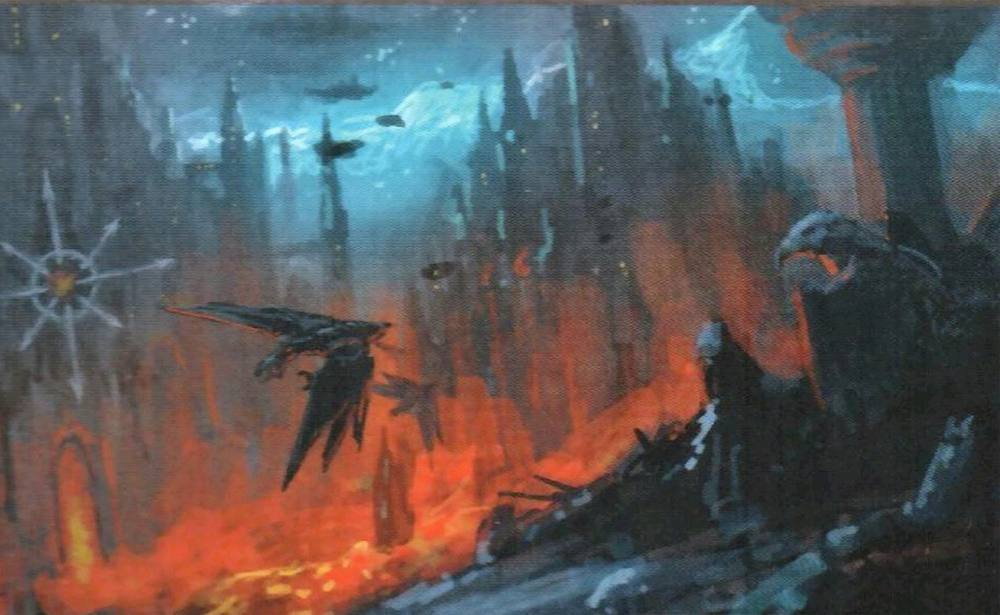

Time of Ending
| Time of Ending | |
|---|---|
| Era of the Age of the Imperium | |
 The last days of Cadia, 999.M41, as the Thirteenth Black Crusade brought the Time of Ending to its close Artwork © Games Workshop | |
| Date | c. 744.M41 – 999.M41 |
| Named for | The prophecy of Taggarath, the Seer of Corrinto (744.M41) |
| Preceded by | The Waning |
| Followed by | Era Indomitus |
| New threats | T'au Empire; Tyranids; the awakening Necrons |
| Ended by | The Thirteenth Black Crusade, the Fall of Cadia and the opening of the Great Rift |
The Time of Ending is the name Imperial historians give to the last era of the 41st millennium. It lasted from about 744.M41 to 999.M41. In these two and a half centuries the Imperium of Man met new alien powers, among them the T'au Empire, the Tyranids and the reawakening Necrons, while the strength of Chaos grew in every part of the Imperium. The era ended with the victory of Abaddon the Despoiler in the Thirteenth Black Crusade, the destruction of Cadia and the opening of the Great Rift across the galaxy. It was followed by the Era Indomitus.[1]
The era took its name from a prophecy. In 744.M41 Taggarath, the Seer of Corrinto, announced that the end times were at hand, and that even the light of the Emperor would be swallowed by darkness. The Inquisition executed him at once for heresy and to keep his words from spreading, but psykers on countless worlds took up the same cry. Later scholars read his vision as a foretelling of the blackout of the Astronomican that came with the Great Rift.[1]
Character of the era
[edit]By the middle of the 41st millennium secession, rebellion, heresy and the corruption of Chaos were present in every part of the Imperium. Alien powers old and new pressed on its borders. Preachers declared that the aliens were humanity's punishment for straying from the Emperor, and that the rise of mutants and witches was a further sign of its sin.[1]

The Adeptus Astartes and the Astra Militarum fought on more fronts than at any time since the Horus Heresy. Astropaths struggled to pull the flood of messages from the Warp: governors begging for aid, officers calling for reinforcements, admirals warning of enemy fleets. The forces of the Imperium could not be everywhere at once. Over all of it the seers spoke of a great swell in the Warp, as if some vast thing were moving beneath the surface.[1]
New enemies (742–757.M41)
[edit]The T'au and the Tyranids
[edit]The era opened in the galactic east. The Damocles Gulf Crusade of 742.M41 was the Imperium's first war with the T'au. It reached the sept world of Dal'yth and ground to a stalemate there, and the Imperial fleet accepted the T'au offer of peace talks and withdrew. A threat greater than the T'au was approaching.[1]

In 745.M41 Hive Fleet Behemoth entered the galaxy and destroyed the systems of Tyran and Thandros, from which the Tyranids take their name. The same year it fell on Ultramar. In the Battle of Macragge the Ultramarines lost their entire 1st Company, and Chapter Master Marneus Calgar was gravely wounded, but two battlefleets of the Imperial Navy arrived in time to destroy the hive fleet.[1]
Daemons, exodus and plague
[edit]In 748.M41 the star Ares turned the colour of blood. The Blood Star Campaign that followed against daemons in the Scarus Sector cost the lives of three Chapter Masters and the fleet admiral of the Segmentum Obscurus. In 750.M41 six Aeldari craftworlds appeared in the Argos system and vanished again, and every sun within sixty light years went out. In the Great Exodus that followed the Imperium tried to move billions of people to neighbouring systems, the largest evacuation it had ever attempted. About twelve in every hundred were saved. The ring of dead worlds left behind is called the Deadhenge. In 757.M41 the first recorded outbreak of the Zombie Plague struck Hydra Minoris, and a naval quarantine trapped twenty-three billion uninfected people with the dead.[1]
The middle centuries (755–897.M41)
[edit]Not every war of the era was a defeat. In 755.M41 Warmaster Slaydo launched the Sabbat Worlds Crusade to recover a cluster of more than a hundred systems from Chaos, a war that would last for decades.[1]
The signs of decline still mounted. In 797.M41 countless Ork invasions across the Ultima Segmentum threatened to merge into a single great Waaagh, and in the Siege of Zalathras Marneus Calgar is said to have held a gate alone for a night and a day. In 801.M41 the Astronomican flickered. Thousands of ships were thrown off course and lost in the Warp, and many took this as a sign that the Emperor was weakening.[1]
From 813 to 830.M41 the Siege of Vraks consumed the armies of the Imperium, after the Apostate Cardinal Xaphan led the armoury world into the service of the Ruinous Powers. In 863.M41 the Adamant Fury Titan Legion turned on the defenders of Saint Cyllia and fled. Twenty years later the Cadian 423rd Regiment destroyed most of that Legion on the Planus Steppes, in the largest armoured assault since the Battle of Tallarn. In 876.M41 the Bloodthirster Ka'jagga'nath drowned the world of Van Horne in the Bloodtide for eight days, until the 4th Brotherhood of the Grey Knights cast him back into the Warp. In 897.M41 the fortress-convent Sanctuary 101 was destroyed with every Sister inside, the first sign to a few Imperial scholars of the Necron threat.[1]
The last century (901–997.M41)
[edit]The Badab War of 901 to 913.M41 set Space Marine against Space Marine when Lufgt Huron of the Astral Claws refused his tithe of gene-seed and declared himself Tyrant of Badab. More than a dozen Chapters were drawn into twelve years of war. Huron escaped into the Maelstrom, where his Red Corsairs grew in strength for the rest of the era.[1]
In 941.M41 the Ork warlord Ghazghkull Thraka brought his Waaagh to the hive world of Armageddon. The Second War for Armageddon was won by three Space Marine Chapters and the defiance of Commissar Yarrick, and Ghazghkull escaped, swearing to return. The wider history of that world is told in Wars for Armageddon.[1]
Other wars of the last century included:
- Malbede (963.M41). The Ultramarines fought a T'au expedition for the world, until the fighting woke the Necron tombs beneath it. The two forces allied to defeat the Necrons, and Calgar allowed the T'au to leave before he ordered Exterminatus.
- Lutoris Epsilon (975.M41). The Bloodthirster Skarbrand appeared on this Cadian fortress world and drove its garrison to kill one another. The world has been a quarantined Forbidden World ever since.
- Rynn's World (989–991.M41). Waaagh Snagrod overran the Loki Sector, and an accident destroyed the fortress-monastery of the Crimson Fists, nearly ending the Chapter.
- Ichar IV (993.M41). Hive Fleet Kraken attacked the Ultramarines on Ichar IV and ravaged the craftworld Iyanden. The Scythes of the Emperor and the Lamenters were all but destroyed. This was later called the Second Tyrannic War.
- Leviathan (997.M41). Hive Fleet Leviathan rose from below the galactic plane and cut through three segmenta. The Imperium realised that the earlier hive fleets had only been scouts.
- Armageddon again (998.M41). Ghazghkull returned with a larger Waaagh and began the Third War for Armageddon, which ground into a war of attrition.
The final year (999.M41)
[edit]The last year of the millennium brought disaster on every front. The light of the Astronomican grew dimmer and contact was lost with Ultima Macharia. The Mechanicus discovered that the machinery of the Golden Throne had begun to fail, and that no one living knew how to repair it.[1]
Late in the year a wave of psychic energy passed through the Imperium and woke the powers of countless latent psykers. This was the Great Awakening. The backlash tore open warp rifts on a thousand worlds. A few days later came the Night of a Thousand Rebellions, when uprisings broke out across the Imperium, even on worlds held to be secure, and contact was lost between Terra and much of the Segmentum Pacificus. The Red Corsairs struck from the Maelstrom at Chogoris and its neighbours. The Thousand Sons returned to realspace and laid siege to Fenris, drawing the Space Wolves home. A tendril of Leviathan, with the daemon army of Ka'Bandha behind it, closed on Baal, where Commander Dante of the Blood Angels gathered every ally he could find.[1]
The Thirteenth Black Crusade
[edit]Main articles: Thirteenth Black Crusade and Fall of Cadia

Abaddon launched his thirteenth Black Crusade from the Eye of Terror to take Cadia and break the Cadian Gate. The Traitor Legions came behind the Black Legion in numbers not seen since the Heresy. After a long struggle Abaddon threw a fragment of a Blackstone Fortress onto Cadia and destroyed the world. The pylon network that had held the Eye in check failed.[1][2]
The Great Rift
[edit]In the wake of Cadia's fall the Great Rift opened across the galaxy from the Eye of Terror to the Hadex Anomaly. It cut the Imperium in two. The Astronomican was blotted out across much of the galaxy in the Noctis Aeterna, the blind night Taggarath was thought to have seen. In the same days the Primarch Roboute Guilliman was restored to life. He fought his way to Terra and stood before the Emperor, then began the Indomitus Crusade and revealed the Primaris Space Marines he had prepared long before. With these events the Time of Ending gave way to the Era Indomitus.[1]
Assessment
[edit]Imperial scholars count the Time of Ending as the most perilous age since the Horus Heresy. Its wars were greater in number and scale than any before them. Its enemies included powers that had not existed in human memory or had slept for sixty million years. Many of the commanders who would lead the Imperium into the Era Indomitus, among them Calgar, Dante, Grimnar and the Lord Castellan Creed, made their names in these centuries.[1]
Timeline
[edit]The principal dated events of the era, from the prophecy of Taggarath to the opening of the Great Rift. See also 41st millennium.
| Date | Event | Theatre |
|---|---|---|
| 742.M41 | The Damocles Gulf Crusade fights the first war with the T'au Empire and ends in a stalemate at Dal'yth. | Damocles Gulf |
| 744.M41 | Taggarath, the Seer of Corrinto, prophesies the end times; the era takes its name from his words. | Corrinto |
| 745.M41 | Hive Fleet Behemoth destroys Tyran and Thandros, then attacks Ultramar; the Battle of Macragge is fought. | Ultramar |
| 748.M41 | The star Ares turns blood-red; the Blood Star Campaign begins against daemons in the Scarus Sector. | Scarus Sector |
| 750.M41 | Six craftworlds appear in the Argos system and vanish; the Great Exodus begins. | Argos system |
| 755.M41 | Warmaster Slaydo launches the Sabbat Worlds Crusade. | Sabbat Worlds |
| 757.M41 | The first recorded outbreak of the Zombie Plague on Hydra Minoris; a naval quarantine traps the uninfected. | Hydra Minoris |
| 797.M41 | Ork invasions across the Ultima Segmentum threaten to merge into a single Waaagh; the Siege of Zalathras. | Ultima Segmentum |
| 801.M41 | The Astronomican flickers; thousands of ships are lost in the Warp. | Imperium-wide |
| 813–830.M41 | The Siege of Vraks consumes the armies of the Imperium. | Vraks Prime |
| 863.M41 | The Adamant Fury Titan Legion turns on the defenders of Saint Cyllia and flees. | Saint Cyllia |
| 876.M41 | The Bloodthirster Ka'jagga'nath drowns Van Horne in the Bloodtide until the Grey Knights cast him back into the Warp. | Van Horne |
| 883.M41 | The Cadian 423rd Regiment destroys most of the Adamant Fury on the Planus Steppes. | Planus Steppes |
| 897.M41 | Sanctuary 101 is destroyed with every Sister inside, the first sign of the Necrons threat. | Sanctuary 101 |
| 901–913.M41 | The Badab War; Lufgt Huron of the Astral Claws declares himself Tyrant of Badab. | Badab Sector |
| 941.M41 | Ghazghkull Thraka brings his Waaagh to Armageddon; the Second War for Armageddon is won. | Armageddon |
| 963.M41 | The Ultramarines fight a T'au expedition on Malbede until the fighting wakes the Necron tombs; Calgar orders Exterminatus. | Malbede |
| 975.M41 | The Bloodthirster Skarbrand appears on Lutoris Epsilon; the world is quarantined as a Forbidden World. | Lutoris Epsilon |
| 989–991.M41 | Waaagh Snagrod overruns the Loki Sector; the Crimson Fists nearly lose their Chapter at Rynn's World. | Loki Sector |
| 993.M41 | Hive Fleet Kraken attacks the Ultramarines on Ichar IV and ravages Iyanden. | Ichar IV |
| 997.M41 | Hive Fleet Leviathan rises from below the galactic plane and cuts through three segmenta. | Galactic plane |
| 998.M41 | Ghazghkull returns with a larger Waaagh; the Third War for Armageddon begins. | Armageddon |
| 999.M41 | The Great Awakening; the Night of a Thousand Rebellions; the Thirteenth Black Crusade destroys Cadia. | Imperium-wide; Cadia |
| 999.M41 | The Great Rift opens across the galaxy from the Eye of Terror to the Hadex Anomaly; the Time of Ending gives way to the Era Indomitus. | Galaxy-wide |
See also
[edit]References
[edit]- ^ a b c d e f g h i j k l m n o p q Codex Adeptus Astartes - Space Marines (8th Edition), pp. 16-17. Games Workshop. Haley, Guy. Dark Imperium (novel). Black Library.
- ^ Gathering Storm - Part One - Fall of Cadia (7th Edition), pp. 12-13, 16, 20, 22-23, 26-33, 35-37, 40-42, 44, 48-49,52-53, 58-60, 62-65, 68-69, 72-78, 80-86, 88. Games Workshop. Gathering Storm - Part Three - Rise of the Primarch (7th Edition), pp. 4-93. Games Workshop.